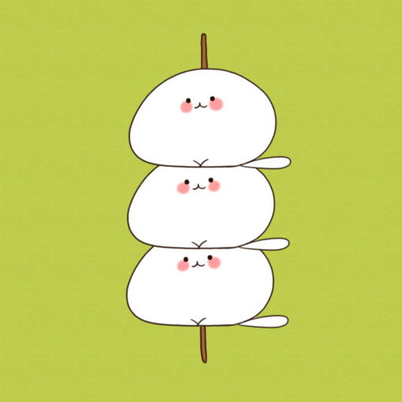

blur()参数是一个css长度，但是不能接受百分数。值越大越模糊
brightness()让元素更暗或者更亮，如果参数为0%，元素会全黑，如果是100%将不会有变化.值越大越亮
contrast()设置对比度，如果参数为0%，元素会全灰，如果是100%将不会有变化.值越大对比度越明显
drop-shadow()设置阴影，它和box-shadow属性很像，但是它没有inset关键字
grayscale()设置灰度，参数为0%到100%之间，为0%时不会有变化，为100%全灰
hue-rotate()围绕色环旋转色调，0度不会有变化。没有最大值，但是影响在360度以下
invert()反转，值为0%到100%之间，为0%时不会变化，为100%时完全反转
opacity()设置不透明度
saturate()设置饱和度，值越大饱和度越大。100%是不产生变化，0%是完全不饱和
sepia()将颜色转换到深褐色，值在0到100%之间，为0时，不变化，为100%时，全深褐色